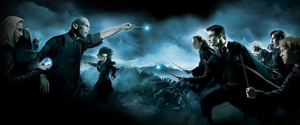
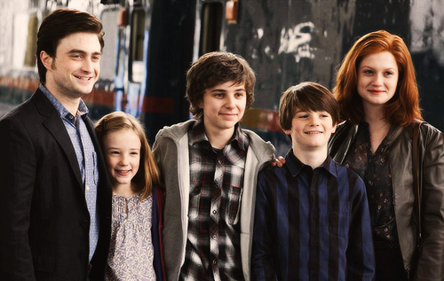
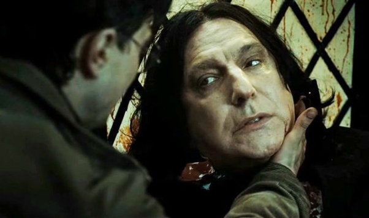
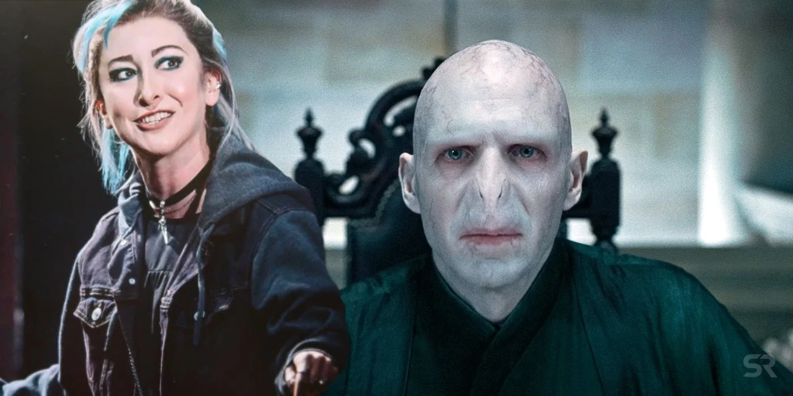

harry potter
As we all know Harry Potter he is a very good and talented WIZARD. He is very good at Qudditch and he was the seeker at Hogwarts in Gryffindor Qudditch Team. He can perform intense magic with the graet ease. He was the one who fought You-Know-Who so many times and the only one to live Avada Kedavra yes the Killing Curse wich is one of the creulest curses of all time and also one of the Unforgivable Curses. We all know that later onwards he even became the head of the Auror Department as he always wanted to become an Aruor, as a fact Harry was actually the youngest Head Of The Auror Department. He was the 'BOY WHO LIVED'. We will see many different things in this app about Harry Potter. If you have any difficulty then just relate to te picture give above it, and so my Wizading Friends we shall soon know all about Harry Potter.
Fun Facts

Harry has actualy faced Voldemort 8 times Yes, a total of 8 times and not only once or twice or thrice.
Harry later married Ginny and had 3 children. Read the next part of the app to know more about this fact.
harry potter and ginny weasley life

Harry Potter at the age of 23 ended up marring Ginny Weasley and had 3 children. Ginny Weasley had finaly earned what she wanted the most, which was that Harry starts 💕loving💕 her. But now it was to the extreme extend that Harry even decided he wants to marry Ginny. He named his kids thus Albus Severus Potter after Albus Dumbledore and Severus Snape, Lily Luna Potter after Lily Potter and Luna Lovegood and James Sirius Potter after James Potter and Sirius Black.
things you thought will now be corrected

Severus Snape is actually good and not bad, he actually killed Dumbeldore because Dumbledore asked Severus to.. You see he wanted the power of the Elder Wand to go to Severus so that Voldemort would not get it. And Severus had been told by Dumbledore to spy on the Dark Lord, and to do everything the Dark Lord says to do so that He Who Must Not Be Named does not doubt Severus.

Delphi was actually Voldemort's daughter and not really a Diggory. We come to know this by the end of Harry Potter And The Cursed Child.

As many of you guys will think that Harry is a great Quidditch player and will go into quidditch later in his carrer but wrong, he did not take quidditch in his carrer his was only the Head of the Auror department but actually Ginny did. Yes as we all know know that she was also a great quidditch player and her fovaurite team was the Holyhead Harpies, so she played quidditch for The Holyhead Harpies all witch quidditch team as a chaser.